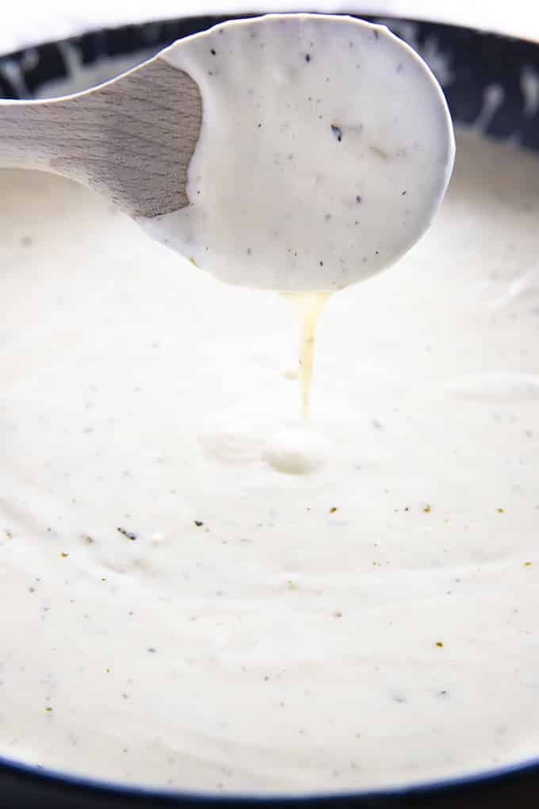

Alfredo Sauce

Description
Alfredo sauce is a classic part of Italian-American cuisine. It's hard to resist this creamy, cheesy sauce, especially when poured over fettuccine noodles. This specific recipe uses generous amounts of parmesan cheese, butter, cream, and garlic to create a tasty sauce for any kind of pasta.
Ingredients
- 1 Wedge of Parmesan Cheese
- 1 Stick of Butter
- 1 1/2 Cups of Heavy Whipping Cream
- 3 Cloves of Garlic
- 1/2 Teaspoon of Italian Seasoning
- 1/2 Teaspoon of Salt
- 1/4 Teaspoon of Black Pepper
Steps
- Grate about 2 cups of Parmesan cheese.
- Mince garlic and set aside.
- Add the butter and cream to a large skillet.
- Simmer over low heat until thoroughly combined.
- Mix in garlic, Italian seasoning, salt, and black pepper.
- Slowly add Parmesan, whisking continuously as it melts.
- Make sure cheese is fully melted and mixed in.
- Use or store immediately.